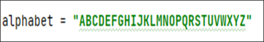
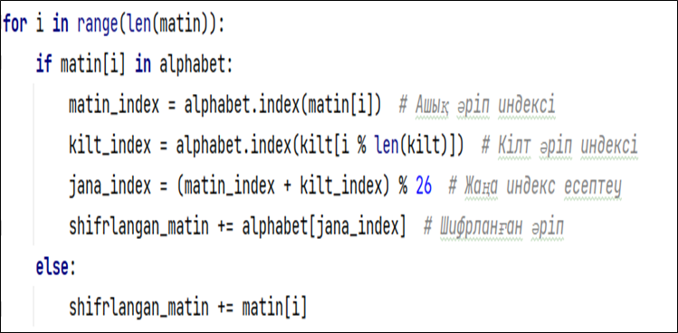
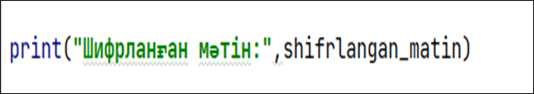
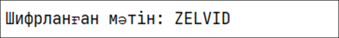

Кіріспе
Виженер шифрі – бұл көпалфавитті шифрлау әдісі, онда әрбір әріп белгілі бір ұзындықтағы кілт сөзінің сәйкес әрпімен шифрланады. Бұл әдіс Цезарь шифрінің жетілдірілген нұсқасы болып саналады.
Бұл жерде біз Nauryz сөзін 6 таңбалы кілтпен ("Mereke") шифрлап, Виженер шифрін Python тілінде жүзеге асырамыз.
1. Алфавитті анықтау
Виженер шифрі тек әріптерді шифрлайды, сондықтан алдымен ағылшын алфавитін енгіземіз:
2. Ашық мәтін мен кілтті дайындау
3. Әр әріпті шифрлау
4. Шифрланған мәтін
Шифрлау нәтижесі: "NAURYZ" → "ZELVID"
5. ҚОРЫТЫНДЫ
Виженер шифрі Цезарь шифрінен әлдеқайда қауіпсіз, себебі онда бір кілт орнына бірнеше әріп қолданылады. Бірақ қазіргі криптографияда одан да күрделі әдістер қолданылады.
ПРАКТИКАЛЫҚ ТАПСЫРМАЛАР
1-тапсырма: Шифрлау
Өз есіміңізді Виженер шифрын қолданып шифрлаңыз.
2-тапсырма: Дешифрлау
Мысалдағы "ZELVID" шифрланған мәтінін дешифрлайтын бағдарлама құрыңыз.
3-тапсырма: Шифрлау
Қазақша алфавит құрып, "КРИПТОГРАФИЯ" сөзін шифрлаңыз.